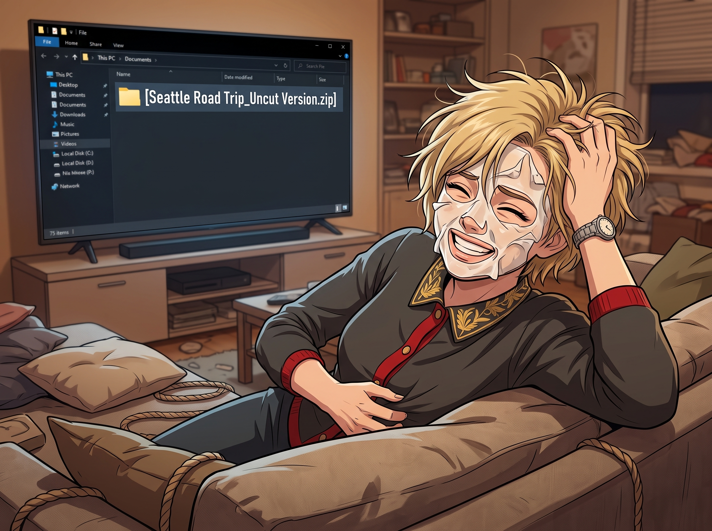
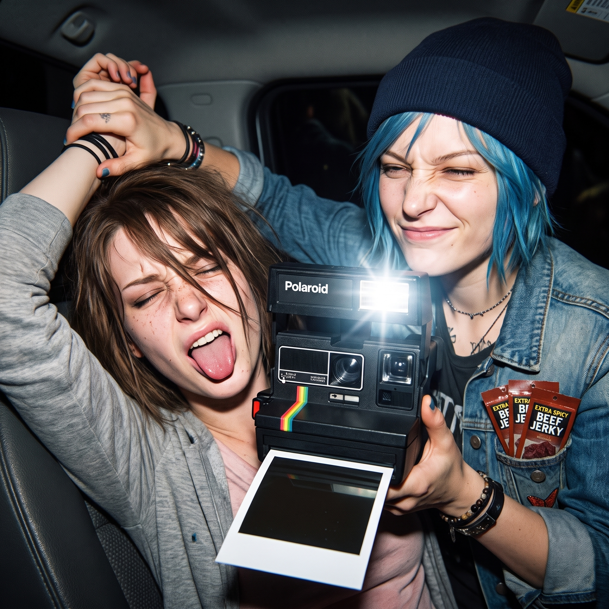

加油站碎花女神



沙發上剛結束一場鬧哄哄的拉扯，Victoria 靠在沙發背上，一隻手還揉著剛才被撓得發癢的腰側，另一隻手胡亂撥著被弄亂的頭髮，嘴角卻還殘留著方才笑到停不下來的弧度，臉上敷了一半的面膜也皺成了一團，狼狽又帶著幾分鬆快。
那台被遺忘的 75 吋 4K 電視因為沒有人切斷信號，無情地自動跳進了下一個名為【西雅圖公路旅行_未刪減版.zip】的資料夾。
巨大的屏幕上，突然彈出了這兩張讓全場氣氛瞬間逆轉的「核彈級」照片。
一、畫面一：車廂內的閃光燈暴擊與特辣牛肉乾
第一張照片直接霸佔了整個屏幕：畫面裡，Chloe 戴著毛線帽，滿臉惡作劇得逞的壞笑，手裡舉著一台復古拍立得，直接把閃光燈懟在了 Max 臉上；而 Max 則被閃得緊閉雙眼、舌頭狂伸，整個人處於一種完全放棄表情管理的狂野狀態。
最致命的是，超高清畫質把 Chloe 牛仔外套口袋裡塞著的三包特辣牛肉乾放大了無數倍。
名媛優雅地端著熱可可，用看著某種史前生物的眼神看著屏幕：「Caulfield，妳伸舌頭的樣子簡直像一隻在高速公路上暈車的黃金獵犬。還有 Price，誰會把三包廉價的工業高鈉牛肉乾塞在胸口的口袋裡？妳的品味簡直比波特蘭的下水道還要令人絕望。」
「那可是公路旅行的靈魂補給！而且是 Chloe 非要在紅綠燈前搞偷襲……」Max 弱弱地反擊道。
二、畫面二：硬核碎花裙加油站女神
然而，真正的殺招在三秒後降臨。幻燈片切換到了第二張拍立得掃描件。
整個二號車廂的空氣在這一秒突然凝固了。
屏幕上，那個平時穿著機油背心、滿嘴髒話的藍髮不良少女，居然穿著一件極其溫婉、隨風飄逸的淡黃色田園碎花洋裝！她嘴裡雖然還叼著煙、手裡握著粗獷的加油槍，但那截露出的白皙大腿和被風吹起的裙擺，配上底下 Max 那句極盡調侃的塗鴉註解，直接形成了無與倫比的視覺衝擊。
Kate 激動得差點把手裡的餅乾捏碎，雙眼放光地盯著屏幕：「天啊……Chloe！妳穿碎花裙子簡直太、太、太漂亮了吧！！這件黃色完全把妳的藍頭髮襯托出來了！就像電影裡的女主角一樣！妳為什麼平時都不穿了呀？！」
雖然這張照片 Kate 之前在 Max 的手帳裡見過巴掌大的縮印版，當時只覺得有趣，並沒有太大反應。但此刻被投放到七十五吋的巨幕上、以毫無死角的高清畫質呈現時，那種細膩到連裙擺布料紋理都清晰可見的視覺衝擊，跟當初那張小小的縮印照片完全是兩種等級的震撼，讓她忍不住又重新驚呼了一次。
短暫的死寂後，沙發上爆發出了名媛毫無形象的狂笑。
「哈哈哈哈哈哈！碎花雪紡裙？！Price，妳居然也有穿得像個要去參加鄉村相親大會的時候？！」Victoria 笑得直拍大腿，眼淚都快飆出來了，「全美最硬核加油站碎花女神？Caulfield，我收回剛才的話，妳簡直是個捕捉時代黑色幽默的攝影天才！這張照片必須放大到四十吋，我要把它掛在西雅圖最繁華的美術館中央！」
三、攻守徹底逆轉：機械師的社會性死亡
如果說剛才 Victoria 被公開處刑是惱羞成怒，那現在的 Chloe 則是徹底的社會性核爆破防。
藍髮機械師的臉從脖子根一路紅到了耳朵尖，整個人像一隻被踩了尾巴的貓一樣從沙發上彈了起來。那次西雅圖之旅，她是因為跟 Max 打賭輸了，才被迫換上這件 Max 從二手古著店淘來的碎花裙去加油，沒想到被抓拍得如此唯美又荒誕。
「MAXINE CAULFIELD！！！」
Chloe 發出一聲崩潰的怒吼，連滾帶爬地越過茶几，這次換她去撲殺 Max 了。
「我靠！我明明記得我把這張照片鎖在三層加密的隱藏文件夾裡了！妳是怎麼把它投上去的？！給我關掉！立刻！馬上！不准看！把妳的眼睛閉上，Chase 夫人！」
Max 抱著電腦在長桌後面瘋狂繞圈，笑得氣喘吁吁：「哈哈哈哈！失誤！純屬失誤！不過既然都播出來了，不如我們明天就去湯森港給妳買幾件新的碎花洋裝吧！」
「去妳的碎花！老娘要把那台電視砸了！！」
深夜的二號車廂裡，原本用來對付 Victoria 的沙發大亂鬥，最終以藍領技師惱羞成怒追殺攝影師歡樂收場。而那張加油站碎花女神的照片，則被 Victoria 趁亂用手機偷偷拍了下來，成為了日後工坊裡最具有戰略威懾力的終極武器。